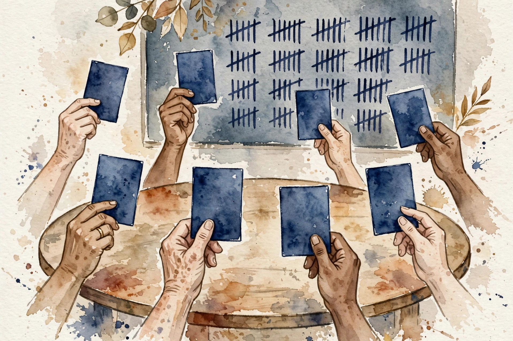
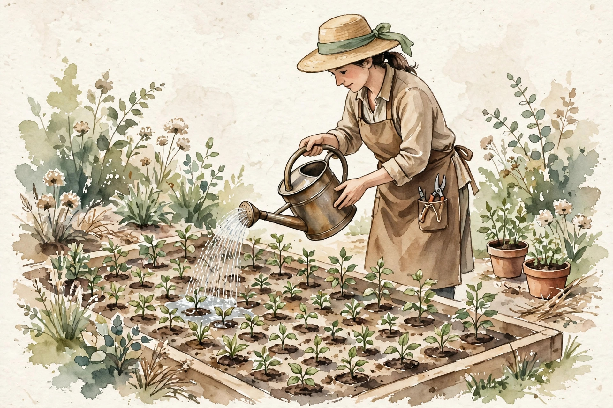

CS224N · Companion artifact U11 of 15
Spend compute after training: sample more, check the answers, decode faster. Inference is a budget. Spend it where it moves the score.
“From the lesson” marks facts from lessons/u11_reasoning_testtime.md. “Illustration” marks interactive toys that run the lesson’s rules over tiny inputs. “Companion” marks advice from the companion author. Tags after each section name the lesson leaf, for example C04.

Section 1 · C01
From the lessonC01 §2, §3
You supervise the steps, not just the answer. What changes? Supervision is a spotlight. Point it at the answer and the model learns answers. Point it at the steps and the model learns checkable work. The spotlight does not make the work true, it makes it visible. The mechanism is the loss: answer loss on the final token, step loss on intermediates.
From the lessonC01 §4, §5
Hand-set toy, labeled as such: labeling 1000 steps costs 10x labeling 1000 answers (steps are longer to judge). The budget question: steps or more answers? The step-trained model debugs better (its steps are checkable), but the steps are still not proven causal (C12).
From the lessonC01 §11
The broken assumption is that supervised steps are the model's reasoning. The model learns plausible steps that ratify a guessed answer (rationalization, U08 C05). Supervised, not faithful.
Step labels buy checkable work, not true work. The spotlight makes steps visible, never faithful.
Section 2 · C02
From the lessonC02 §2, §3
The reward is a unit test. Can the model hack it? Math answer checked by exact match on the final number: hacking needs the right number, which is the task. The reward is the task. A verifiable reward is a lock with one key: the right answer. A learned reward is a lock the model can pick (U07 C10). Verifiable rewards trade generality for honesty.
From the lessonC02 §4, §5
Hand-set toy, labeled as such: 100 math items, verifier exact-match. Reward 1 on 63, 0 on 37. The policy gradient pushes toward the 63. No judge in the loop: RL with a ground-truth reward, no reward model, no preference data, no hacking surface beyond the verifier itself.
From the lessonC02 §11
The broken assumption is that the verifier is correct. The test suite misses an edge case, the model learns the exploit and scores 1 on wrong code. Verify the verifier.
A verifiable reward trades generality for honesty. The one remaining attack surface is the verifier itself.
Section 3 · C03
From the lessonC03 §2, §3
The schedule lists DeepSeek-R1 and DAPO. What do you actually know? The lesson's answer is a protocol, not a summary: the honest reading card. Title, venue, the claim in one sentence, "not read" stamped on the rest. A reading list is a map, not the territory. The card records the boundary: title known, claims unverified, paper not opened.
From the lessonC03 §4, §5
Hand-set toy, labeled as such: the card for DeepSeek-R1 reads "title known from the reading list, content not inspected in this build". The card is the deliverable. It stops title-dropping from becoming knowledge-claims: every claim about the paper cites the card or the paper.
From the lessonC03 §11
The broken assumption is that the title tells you the method. Titles undersell ablations and oversell novelty. Read before you repeat.
The card is the deliverable. Title known, content not inspected: write that down instead of inferring the method from the name.
Illustration The honesty card. Type a paper title. The card stamps what is known and what is not.
title
Section 4 · C04
From the lessonC04 §2, §3
Do you check the final answer or every step? Outcome verification is the bouncer at the exit: right answer, come in. Process verification is the inspector on the line: every step must hold. The inspector costs more and catches more. Outcome check costs 1 unit, catches wrong answers. Process check costs 5 units, catches wrong steps too.
From the lessonC04 §4, §5
Hand-set toy, labeled as such: 10 traces, 4 with right answers, 2 with right steps. Outcome keeps 4, process keeps 2. Process is stricter and 5x the cost. The answer is right but the steps are wrong: outcome passes, process fails. Process selection can prune early: kill a trace at the first bad step.
From the lessonC04 §11
The broken assumption is that verified steps mean a right answer. Every step checks out, the conclusion is a non sequitur. Verify the logic, not just the steps.
Section 5 · C05
From the lessonC05 §2, §3
One sample gives 0.60. What do 21 give? Sampling is a second chance machine. Each draw is a guess, the majority is the committee. Committees beat individuals when the members err independently. P(majority right) is the binomial tail: at p = 0.6 the tail grows with n.
From the lessonC05 §4, §5
From compute_u11.py: majority at p = 0.6 gives 0.6000 (n = 1), 0.6826 (n = 5), 0.7535 (n = 11), 0.8256 (n = 21). The gains shrink: +0.083, +0.071, +0.072. Diminishing but real. More samples, same model, better answer.
From the lessonC05 §11
The broken assumption is that errors are independent. The model repeats its favorite wrong answer 21 times, the majority is wrong with confidence. Correlated errors break the committee.
compute_u11.py (executed 2026-10-06): 0.6000, 0.6826, 0.7535, 0.8256 at n = 1, 5, 11, 21.Sampling is the cheapest accuracy on a fixed model. The committee works when its members err independently.
Illustration The committee. The binomial tail is C05’s. The per-sample accuracy is yours. Prefilled with the lesson toy.
p
n (odd)
Section 6 · C06
From the lessonC06 §2, §3
The model reasons three ways and answers twice "A" once "B". What is the answer? "A". The paths differ, the answer is stable. Stability is the signal. Self-consistency is C05 with reasoning traces: sample diverse paths, vote the answers. Diverse paths that converge are stronger evidence than one path.
From the lessonC06 §4, §5
From compute_u11.py: at p = 0.4, majority of 5 gives 0.3174, of 11 gives 0.2465. Voting on a weak reasoner makes it worse. Check p first, then vote. Temperature 0 gives 5 identical paths: the "vote" is theater. Measure path diversity, not just n.
From the lessonC06 §11
The broken assumption is "diverse paths." Identical paths are one path with extra steps. Diversity must be measured.
compute_u11.py (executed 2026-10-06): at p = 0.4, majority of 5 gives 0.3174, of 11 gives 0.2465. Below one half, voting hurts.Check p first, then vote. Below one half the majority amplifies the wrong side, and identical paths are not a vote.
Section 7 · C07
From the lessonC07 §2, §3
100 samples, 10 prompts or 1 prompt? The budget is water, the prompts are plants. Diminishing returns mean the tenth liter on one plant beats the hundredth. Water broadly. Total = m times g(B/m). With g concave, the sum is maximized by spreading (Jensen's inequality working for you).
From the lessonC07 §4, §5
From compute_u11.py, gain(n) = 1 - exp(-n/20): 10 prompts x 10 gives 3.935, 1 prompt x 100 gives 0.993. The deep allocation wastes 75 percent of the budget on saturated returns.
From the lessonC07 §11
The broken assumption is that gains are concave. A task with a threshold (needs 50 samples to click): spreading gives 10 x 10 = 0. Know the shape before you spread.

compute_u11.py (executed 2026-10-06): 10 x 10 gives 3.935, 1 x 100 gives 0.993.With concave gains, spreading the budget beats deepening it. Know the gain shape before you spread.
Illustration The waterer. The gain rule g(n) = 1 - exp(-n/20) is C07’s. The budget split is yours.
budget
prompts m
Section 8 · C08
From the lessonC08 §2, §3
The big model is slow, the small model is fast but worse. Can they team up? The small model proposes, the big model disposes. Each proposed token is checked against the big model's distribution and accepted or corrected. The output is exactly the big model's, only faster.
From the lessonC08 §4, §5
From compute_u11.py: draft 5 tokens, accept each with p = 0.7. Expected accepted run = (1 - a^(g+1)) / (1 - a) = 2.941. Each pass yields about 3 tokens for about 1 target forward pass plus 5 cheap drafts. Same output distribution, fewer big-model calls.
From the lessonC08 §11
The broken assumption is that the draft is cheap enough. A draft at half the target's cost with a = 0.3: the overhead exceeds the gain. Measure a and the draft cost first.
compute_u11.py (executed 2026-10-06): 2.941 of 5 drafts accepted on average.Draft cheap, verify exact. Speculation buys latency, never quality: the output distribution is unchanged.
Illustration The draft desk. The acceptance formula is C08’s. The draft quality is yours. Prefilled with the lesson toy.
accept prob a
draft length g
Section 9 · C09
From the lessonC09 §2, §3
The model writes long traces and wins. Is it reasoning or typing? Reasoning evals have the same tilts as all evals, plus one: trace length looks like thought. Control for it or measure typing skill.
From the lessonC09 §4, §5
Hand-set toy, labeled as such: the judge prefers the longer trace 0.62 of the time, blinded to length 0.53. The 0.09 is length bias, U10's lesson applied. Report the blinded number.
From the lessonC09 §11
The broken assumption is that the answer check is enough. The trace is gibberish but the answer is right, and the eval rewards the pair. Check traces when traces are the claim.
Section 10 · C10
From the lessonC10 §2, §3
The reasoning model fails 40 percent of the time. Where? U09 C12's autopsy, specialized: reasoning adds the rationalization class (steps that look right and are not). Count first, fix the biggest class.
From the lessonC10 §4, §5
From compute_u11.py, 60 traces: wrong tool 14, bad args 11, no stop 9, retrieval miss 12, rationalized trace 8, other 6. The top two classes are 26 of 60: nearly half the failures. Wrong tool (14) and retrieval miss (12) dominate, so the sprint is tools and retrieval, not the reasoner.
From the lessonC10 §11
The broken assumption is that the classes are disjoint. A bad-arg call that also used the wrong tool: allow the secondary label, keep the primary.
compute_u11.py (executed 2026-10-06): 60 traces, top two classes 26.Count first, fix the biggest class. The taxonomy says where the sprint goes, not intuition.
Section 11 · C11
From the lessonC11 §2, §3
Samples cost money. Where is the knee? The frontier is the menu: each point is a (cost, quality) pair. The knee is where the menu stops being worth it. Spend to the knee, not past it. The mechanism is the ratio: delta quality over delta cost per step. When the ratio falls below your value of quality, stop.
From the lessonC11 §4, §5
From compute_u11.py: (1, 0.55), (4, 0.68), (16, 0.75), (64, 0.79). 1 to 4 buys +0.13, 4 to 16 buys +0.07, 16 to 64 buys +0.04. The knee is near 16: past it, 4x the cost for +0.04. The price of quality rises 3x across the curve.
From the lessonC11 §11
The broken assumption is that the curve is stable. A new prompt shifts the whole curve. The old knee is wrong. Re-measure per prompt family.
compute_u11.py (executed 2026-10-06): the knee sits near 16 samples.Spend to the knee, not past it. The knee is where delta quality over delta cost bends.
Illustration The knee finder. Paste (samples, accuracy) pairs, one per line, and see the marginal gains.
Section 12 · C12
From the lessonC12 §2, §3
The trace looks perfect. Do you believe it? A trace is a story the model tells about its answer. Stories can be true, useful, and still not the cause. Treat traces as evidence, not as proof.
From the lessonC12 §4, §5
Hand-set toy, labeled as such: 20 traces, corrupt the middle step, 14 answers unchanged. The steps are mostly decoration on this task. The mechanism is the intervention: change the step, watch the answer. No change means the step did not cause the answer.
From the lessonC12 §11
The broken assumption is that failing the test means the model deceives. The model may genuinely use the step but stay steady under corruption (redundant reasoning). The test is one-sided: pass is evidence, fail is not proof of deceit.
Corrupt a step and watch the answer. If it does not change, the step was decoration. Traces are evidence, not proof.
Wisdom index
Each nugget states the idea in plain words, why it matters, and the transferable principle. Every one is anchored to its lesson section.